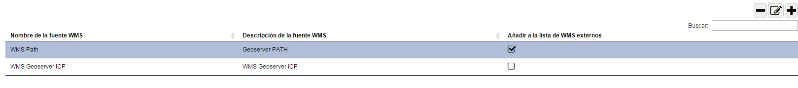
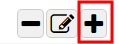
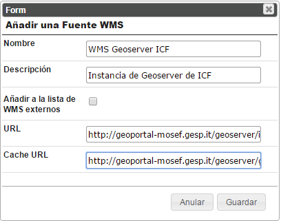
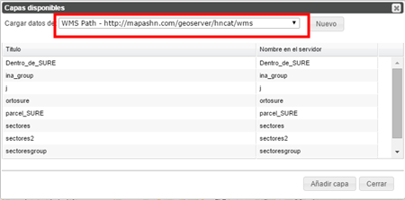
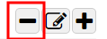
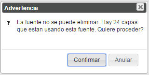
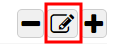
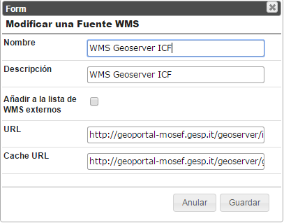

Permite configurar las fuentes de datos WMS que distribuyen datos espaciales (o sea los servidores WMS que proporcionan datos espaciales que se publican en el Geoportal).

Pagina de administracion de las fuentes de datos WMS
A través de una barra de herramientas, estas fuentes se pueden Añadir, Eliminar o Modificar.
Una ventana permite al usuario insertar una nueva fuente WMS.

Añadir nueva fuente WMS
Las informaciones requeridas son:

Añadir una fuente WMS
Nombre: el nombre de la fuente WMS. Se trata de un nombre “interno” al Geoportal utilizado únicamente para identificar la fuente de manera univoca. No tiene relación con la dirección o el nombre del servidor.
Descripción: permite proporcionar más detalles sobre la fuente
Anadir a la lista de WMS Externos: Si es activado, la esta fuente aparece en la lista de los servidores WMS disponibles en la ventana “Anadir Servicios WMS Externos”.

Funcionalidad para “Anadir Servicios WMS Externos” en el Geoportal
URL: La dirección del servicio WMS (por ejemplo http://geoserver.icf.gob.hn /geoserver/icf/ows).
Cache URL (opcional): La dirección del servicio de Cache WMS – si es configurado (por ejemplo http://geoserver.icf.gob.hn /geoserver/gwc/service/wms)
Permite eliminar una fuente WMS.

Eliminar una fuente WMS
Si hay capas configuradas en el Geoportal que utilizan la fuente WMS, un mensaje de adventencia pregunta al usuario si quiere proceder.

Mensaje de advertencia para la eliminaciòn
Una ventana permite al usuario modificar una fuente WMS existente.

Modificar una fuente WMS
La ventana es similar a la de inserción de una nueva fuente.

Modificar una fuente WMS